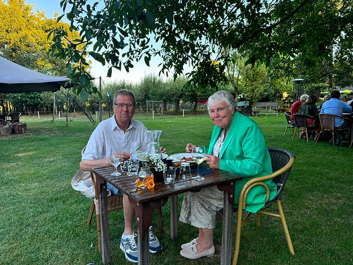
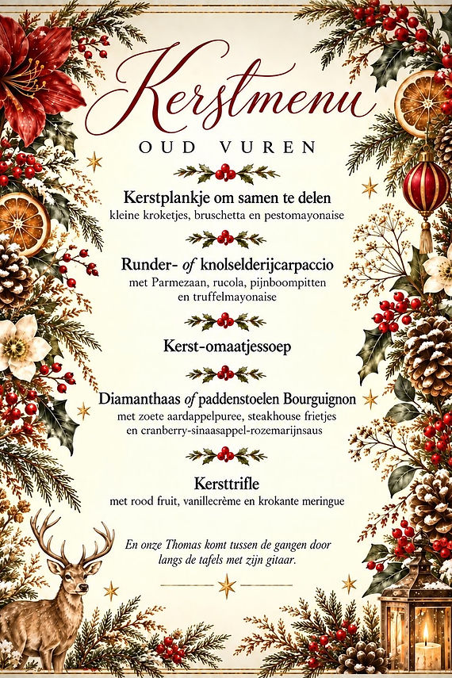
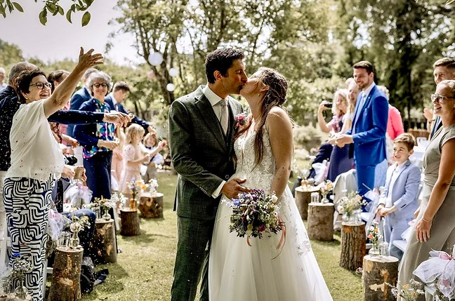
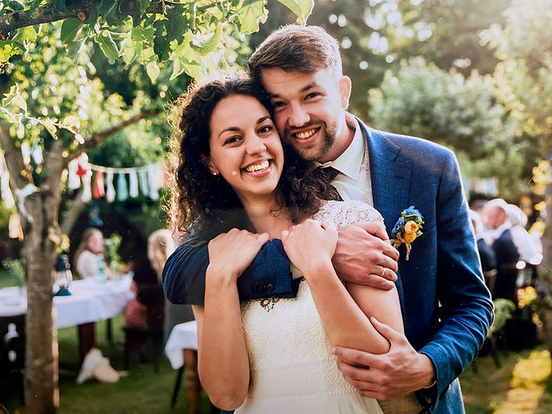

Restaurant · Waaldijk 70, Vuren
Dineren in de oudste boerderij van Vuren
Een authentieke en laagdrempelige plek vol dynamiek en ambacht. We koken met al het lekkers dat de regio te bieden heeft, en in de zomer is het heerlijk toeven in onze tuin.

Welkom in Restaurant Oud Vuren
Restaurant Oud Vuren is gevestigd in de oudste boerderij van Vuren. Onze diners bereiden we met al het lekkers dat de regio te bieden heeft. In de zomer eet je buiten in de tuin, in de winter binnen bij de kachel.
Naast onze diners verzorgen we ook maatwerk voor bedrijven en gezelschappen, waarbij lokaal en ambachtelijk eten centraal staat.
Graag tot ziens,Wouter Blinde
- Themadiners met een vaste prijs, drankjes inbegrepen
- Gezelschappen vanaf 10 personen, in het Theehuisje, De Deel of de tuin
- Trouwlocatie van de gemeente West Betuwe, tot 100 gasten
- Dinerbon met de hand gestempeld, binnen 24 uur op de post
Dineren in Oud Vuren
Geen vaste kaart, maar dineravonden met een thema. De genoemde prijzen zijn voor het menu inclusief drankjes. Reserveren gaat graag via info@oudvuren.nl.
Op de agenda
-
Kerstlunch12.30 uur, genieten tot 16.00 uurVolgeboekt, wachtlijst mogelijk€ 65 p.p.
-
Kerstdineraanvang 18.30 uurVolgeboekt, wachtlijst mogelijk€ 75 p.p.
-
Kerstlunch12.30 uur, genieten tot 16.00 uur€ 65 p.p.
-
Kerstdineraanvang 18.30 uurVolgeboekt, wachtlijst mogelijk€ 75 p.p.
-
Valentijnsdiner met Les Deux Heureuxvrijdag, zaterdag en zondag, 19.00 uur€ 75 p.p.
Alle prijzen inclusief drankjes. Bij kerst betalen kinderen vanaf 3 jaar de helft.

Kerstlunch € 65 en kerstdiner € 75 per persoon, inclusief drankjes. Kinderen vanaf 3 jaar 50%.
Mail voor kerst of de wachtlijstGenieten met een gezelschap
Een feestje in Oud Vuren, lekker in de tuin of binnen bij de kachel. Heerlijk ontzorgd worden en alle tijd hebben voor je gasten, terwijl wij de lekkerste gerechtjes bereiden en serveren. Vanaf 50 gasten heb je ons hele restaurant voor jezelf. We sluiten om 23.00 uur.
Mooie Middag in Oud Vuren
€ 40 p.p., inclusief 3,5 uur drank
Leuk voor een feestje, borrel of lunch, en stiekem lekker maaltijdvullend.
Dit krijg je
Borrelavond in Oud Vuren
€ 50 p.p., inclusief 4 uur drank
Dit krijg je
Wouters Walking Dinner
€ 60 p.p., inclusief 4 uur drank
Dit krijg je
Opties
- Huisgemaakte appeltaart of kersentaart vooraf+ € 4
- Welkomstdrankje of toostbubbel+ € 3,50
- Gerookt visplateautje met paling, zalm en garnalen+ € 7 p.p.
- Bittergarnituur+ € 2 p.p.
- Extra uur drankarrangement+ € 6 p.p.
Italiaans Walking Dinner: Bella Italia
€ 70 p.p., inclusief 4 uur drank
Dit krijg je
Opties
- Citrusrisotto met zeebaars in plaats van gnocchi+ € 4 p.p.
- Extra uur drankarrangement+ € 6 p.p.
Frans Walking Dinner: L’amour toujours
€ 70 p.p., inclusief 4 uur drankjes
Dit krijg je
Opties
- Peren-tarte tatin vooraf bij de koffie+ € 4 p.p.
- Kaasplankje als extra gang+ € 5 p.p.
- Crêpes Suzette als dessert+ € 5 p.p.
- Extra uur drankarrangement+ € 6 p.p.
Het Theehuisje
Voor kleine gezelschappen tot 24 personen.
De Deel
De basis vanaf 25 personen. De grote ruimte biedt plek aan maximaal 80 personen.
De tuin
In het buitenseizoen gebruiken we ook de tuin en onze tenten.
Praktische zaken voor jullie gezelschap
Om alles goed te regelen lopen we de volgende punten door tijdens een afspraak, maar een mail volstaat ook. Een aanvraag voor een optie of boeking gaat altijd per e-mail.
- Tot 1 dag van tevoren kun je het definitieve aantal doorgeven. Dat is ook het aantal dat we factureren.
- Geef bij de walking dinners even door of er kindermenu’s gewenst zijn. Bij de Mooie Middag maken we geen onderscheid tussen volwassenen en kinderen.
- Versieren kan een uurtje voorafgaand aan het feest. We zijn voorstander van duurzaam versieren: liever papier, karton, jute touw en niet te veel plastic. Confetti is niet toegestaan.
- Bij ontvangst zorgt parkeerwachter Martijn dat iedereen een mooi parkeerplaatsje krijgt.
- Bij binnenkomst serveren we de eerste ronde drankjes (koffie, thee of welkomstdrankje). Daarna pakken gasten de drankjes (koffie, thee, fris, wijn, bier) naar hartenlust zelf achter de bar. We hebben een beperkt assortiment sterke drank waarvoor je niet extra betaalt. Alle gerechtjes worden aan tafel uitgeserveerd.
- We hebben een microfoon, en desgewenst licht Wouter even de gang van zaken toe als alle gasten er zijn.
- Binnen is een vast wit scherm en een eenvoudige beamer. Neem zelf een laptop mee; vooraf testen is een must.
- Onze tuin is geen speeltuin. Kinderen kunnen er onder ouderlijk toezicht spelen, driewieleren of voetballen. Toezicht is nodig vanwege de kwetsbare dieren in de tuin, het slootje en de stroomdraad van de paardjes.
- Muziek: standaard draaien we een gezellig achtergrondmuziekje vanaf een JBL-boxje. Binnen kun je zelf live muziek regelen. Buiten zijn muzikanten, eigen boxen en microfoons uit respect voor de buurt niet toegestaan; muziek in de tuin mag alleen 100% onversterkt. Daarom werken we buiten alleen met Troubadour Rop en Les Deux Heureux.
- Het weer: bij een enkele bui bieden onze tenten soelaas, bij regen en wind verplaatsen we het feest naar binnen.
- Na de afgesproken tijd sluit de bar en gaat de muziek uit. Je hebt dan nog een half uur om af te ronden.
- Het betreden van Oud Vuren is voor jou en je gasten op eigen risico.
- Twee dagen van tevoren krijg je een e-mail waarin we alle afspraken nog eens op een rijtje zetten.
Wat kunnen we voor je doen?
Vraag een optie aan of boek definitief. Vermeld de naam van het gezelschap, de gelegenheid (die zetten we op het welkomstbord bij de ingang), de datum, het aantal gasten, het arrangement en het tijdsvlak.
Liever direct mailen? info@oudvuren.nl

Trouwen tussen de rozen, dineren onder de bomen en de liefde vieren in het licht van de maan
Trouwen in Oud Vuren
Oud Vuren is een officiële trouwlocatie van de gemeente West Betuwe. De combinatie van een grote tuin en een gezellig rustiek restaurant biedt volop mogelijkheden voor een complete bruiloft op één locatie.
Waarom bruidsparen voor Oud Vuren kiezen
- Alles op 1 locatie tot 100 gasten: ceremonie, diner en feest
- Grote tuin met stretchtenten en een gezellig rustiek restaurant
- Ontspannen, informele sfeer
- Veel ruimte voor persoonlijke accenten en eigen invulling
- Ambachtelijke keuken met lokale producten
- Geen massawerk, slechts enkele bruiloften per jaar
- Geen zaalhuur of omzetgarantie
- Altijd een binnen-optie bij slecht weer
Goed om vooraf te weten: we sluiten om 23.00 uur, er is geen harde muziek in de tuin en geen dj.

Zo verloopt een bruiloft meestal
-
Eerste afspraak
We kijken samen of onze locatie past bij jullie wensen. Wat is de sfeer, wat is er mogelijk en wat kost het ongeveer? Enthousiast? Mail ons voor een afspraak via info@oudvuren.nl.
Na de afspraak kan er een optie op een datum worden gezet. We maken een voorstel op maat met al jullie persoonlijke wensen, en in de loop van de tijd wordt de datum bevestigd en het voorstel gefinetuned. Vaak wordt er een keer proef gegeten met de ceremoniemeester(s) tijdens een van onze themadiners.
-
Voorbereiding
Veel voorpret begint bij het verzamelen van persoonlijke details. Vintage meubeltjes, zelfgemaakte slingers, ijscokarretjes, lampionnen, jute lopertjes, fotobusjes, trouwbogen, een pruttelende oude Fiat 500: noem het maar op. Zoek eens op Barn Wedding voor ideetjes. In ons schuurtje kun je alles een dag van tevoren neerzetten. Hebben we die dag al een gezelschap, dan is een ochtend versier-team onder leiding van de ceremoniemeester een goede oplossing.
We zijn voorstander van duurzaam versieren: liever papier, karton en jute touw, geen plastic. Confetti, wensballonnen en vuurwerk zijn niet toegestaan.
-
Ontvangst van de gasten
Parkeerwachter Martijn ontvangt jullie gasten en wijst ze de weg. We verwelkomen iedereen met koffie, thee en fris. Vaak kiezen bruidsparen voor iets kleins bij aankomst, zoals een grote huisgebakken abrikozenplaatkoek in stukjes, vers van de plaat € 2 p.p.
-
De ceremonie
Steeds vaker vindt de ceremonie bij ons in de tuin plaats, met een babs van de gemeente West Betuwe (aan te vragen bij de gemeente). We maken een halve maan-opstelling met authentieke houten klapstoeltjes, een spreekgestoelte en een romantisch bankje onder de vlier, met een eenvoudige Fender-geluidsbox en microfoon. Klaarzetten en materialen € 5 per gast. Een kort ceremonieel muziekje via onze box is geen probleem.
Toostmoment: een lokale bubbel met en zonder alcohol, inbegrepen bij de drankjes.
Taartmoment: een bruidstaart door Wouter zelf gebakken € 8 p.p., Wouters bekende appeltaart en kersentaart € 3,50 p.p., of een eigen taartbuffet waarbij gasten zelf taart meenemen; wij regelen de taarttafel met linnengoed, bordjes, vorkjes, servetjes, koeling en begeleiding € 100.
-
Na de ceremonie, voor het eten
Vaak wordt er nog even geborreld, bijvoorbeeld met een uitgebreide borrelplank € 8,50 p.p. Gasten zoeken naar hartenlust drankjes uit in onze tuinbar. Voor vertier staan er een sjoelbak, het gatenkaasspel, mega Jenga, een spijkerstam en voor kinderen Okido-driewielers.
-
Met elkaar eten
Kies een dynamisch walking dinner, waarbij we gerechtjes serveren waar men gaat of staat, of een klassiek diner aan een lange gedekte tafel € 35 / € 45 p.p. Bij een lange tafel regelen we 6-persoonstafels met linnengoed en linnen servetten € 7 p.p.
We zijn gek op buitenmenu’s van de bbq met lokale producten, de Franse en de Italiaanse keuken. Dat ene gerechtje van jullie eerste spannende date voegen we graag toe, en we houden zorgvuldig rekening met dieetwensen.
-
Naborrel
Na het diner kan er een gezellige naborrel met kampvuurtjes en marshmallows, of een feestje binnen in het restaurant. Vaak serveren we dan bittergarnituur en de altijd populaire puntzak boerenfriet € 7,50 p.p. Dj-avonden organiseren we niet meer, in verband met overlast. Live muziek in de tuin mag alleen zachtjes en onversterkt, daarom werken we met Troubadour Rop en Les Deux Heureux.
Drankjes en verblijf
€ 6 per uur per persoon, inclusief de drankjes uit ons assortiment: lokale Krenkelaar appelbubbels, koffie, thee, frisdrank, sap, bier en wijn.
Het weer
Bij een enkele bui bieden onze tenten soelaas, bij regen en wind verplaatsen we het feest naar binnen. Op de dag zelf stemmen we bij dubieus weer de keuze nog even af. ’s Ochtends een kijkje komen nemen kan ook.
Dinerbon van Oud Vuren
Verras vrienden en familie met een originele, hand-gestempelde dinerbon en geef ze een heerlijke herinnering cadeau. Bestel hem hier, dan gaat hij binnen 24 uur op de post.
Nieuwsbrief
Blijf op de hoogte van onze exclusieve diners en bijzondere thema-avonden.
Tot ziens in Vuren
Restaurant Oud VurenWaaldijk 70
Vuren
info@oudvuren.nl (voorkeur)
Reserveren voor een dineravond, een optie voor een gezelschap of een afspraak voor jullie bruiloft: alles gaat het snelst per e-mail.
Mail Oud Vuren